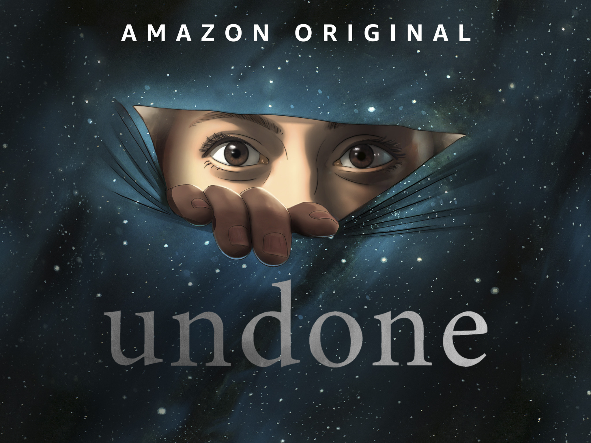
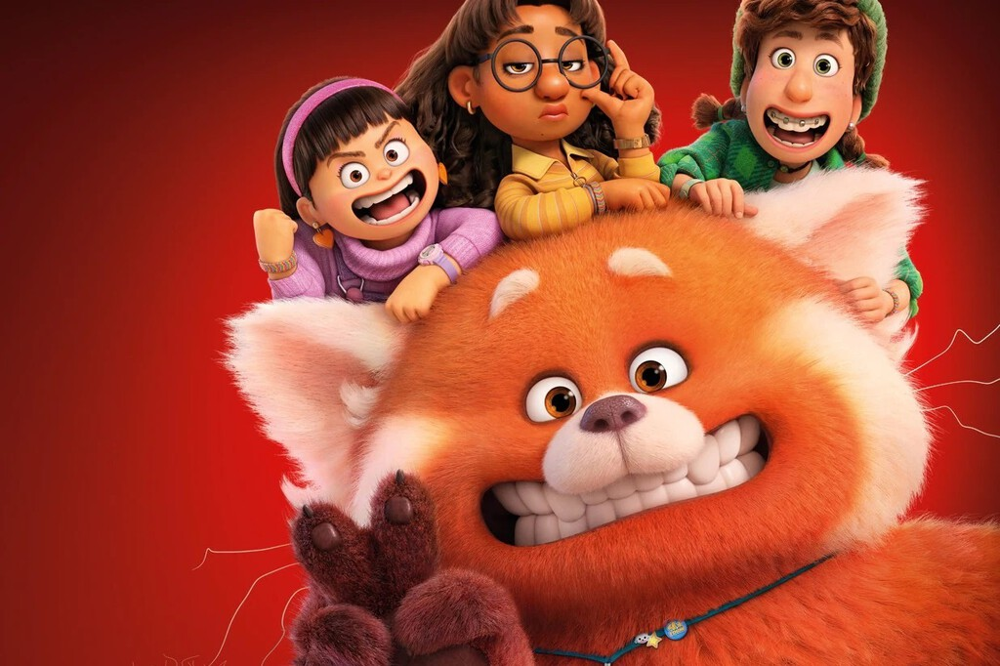

Estrenos
'Komi-san wa Komyusho Desu': La temporada 2 del divertido anime llegará a Netflix el mes que viener
La segunda temporada de 'Komi-san no puede comunicarse' ('Komi-san wa Komyusho Desu') está al caer y ya tenemos un primer trailer y más detalles sobre qué esperar de estos nuevos capítulos. La fórmula para superar la ansiedad...
'Undone': Amazon Prime Video desvela la fecha de estreno y primeros avances de la temporada 2 de su prodigiosa serie animada
He de reconocer que, a pesar de que han pasado ya tres años desde que viésemos una de las mejores series de animación reciente, no me esperaba que su regreso fuera ya. Amazon Prime Video ha desvelado que estrenará la temporada 2 de...
'Red' es la película más divertida de Pixar en mucho tiempo: un estupendo coming of age adolescente con toques de anime
El cine de Pixar empezó siendo divertido por encima de todo. No le faltaba ambición ni una gran capacidad para tocar la fibra sensible del espectador, pero su objetivo primario no era ese. Con el paso de los años, la ambición del estudio...
'La casa del dragón': todo lo que sabemos sobre la precuela de 'Juego de Tronos'
El proyecto lleva tiempo avanzado a paso lento pero firme y a continuación vamos a repasar todo lo que sabemos hasta ahora de esta serie de fantasía que apunta a ser uno de los grandes bombazos televisivos de 2022, o puede incluso que el mayor de todos ellos.